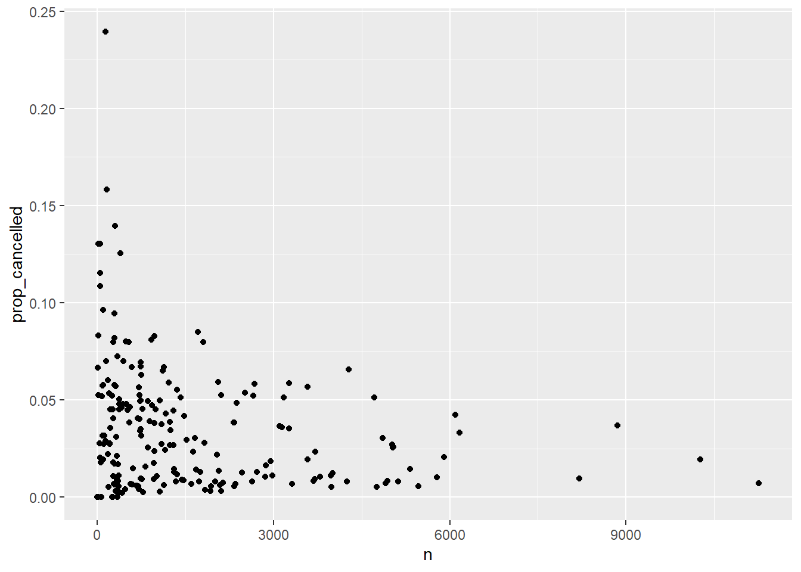

library(tidyverse)
library(mdsr)
library(dbplyr)
library(DBI)SQL Practice
# connect to the scidb server on Amazon Web Services - the airlines
# database lives on a remote server
db <- dbConnect_scidb("airlines")
flights <- tbl(db, "flights")
planes <- tbl(db, "planes")On Your Own - Extended Example from MDSR
Refer to Section 15.5 in MDSR, where they attempt to replicate FiveThirtyEight’s plot of slowest and fastest airports in the section below Figure 15.1. Instead of using target time, which has a complex definition, we will use arrival time, which oversimplifies the situation but gets us in the ballpark.
The MDSR authors provide a mix of SQL and R code to perform their analysis, but the code will not work if you simply cut-and-paste as-is into R. Your task is to convert the book code into something that actually runs. [Hint: use dbGetQuery()]
On Your Own - Practice with SQL
These problems are based on class exercises from MSCS 164 in Fall 2023, so you’ve already solved them in R! Now we’re going to try to duplicate those solutions in SQL.
# Read in 2013 NYC flights data
library(nycflights13)Warning: package 'nycflights13' was built under R version 4.3.3
Attaching package: 'nycflights13'The following objects are masked _by_ '.GlobalEnv':
flights, planesflights_nyc13 <- nycflights13::flights
planes_nyc13 <- nycflights13::planes- Summarize carriers flying to MSP by number of flights and proportion that are cancelled (assuming that a missing arrival time indicates a cancelled flight). [This was #4 in 17_longer_pipelines.Rmd.]
# Original solution from MSCS 164
flights_nyc13 |>
mutate(carrier = fct_collapse(carrier, "Delta +" = c("DL", "9E"),
"American +"= c("AA", "MQ"),
"United +" = c("EV", "OO", "UA"))) |>
filter(dest == "MSP") |>
group_by(origin, carrier) |>
summarize(n_flights = n(),
num_cancelled = sum(is.na(arr_time)),
prop_cancelled = mean(is.na(arr_time)))`summarise()` has grouped output by 'origin'. You can override using the
`.groups` argument.# A tibble: 5 × 5
# Groups: origin [3]
origin carrier n_flights num_cancelled prop_cancelled
<chr> <fct> <int> <int> <dbl>
1 EWR Delta + 598 10 0.0167
2 EWR United + 1779 105 0.0590
3 JFK Delta + 1095 41 0.0374
4 LGA Delta + 2420 25 0.0103
5 LGA American + 1293 62 0.0480First duplicate the output above, then check trends across all years and origins. Here are a few hints:
- use flights instead of flights_nyc13
- remember that flights_nyc13 only contained 2013 and 3 NYC origin airports (EWR, JFK, LGA)
- is.na can be replaced with CASE WHEN arr_time = ‘NA’ THEN 1 ELSE 0 END
- CASE WHEN can also be used replace fct_collapse
SELECT carrier, dest, arr_time, origin, year,
SUM(1) AS n_flights,
SUM(CASE WHEN arr_time = 'NA' THEN 1 ELSE 0 END) as num_cancelled,
AVG(CASE WHEN arr_time = 'NA' THEN 1 ELSE 0 END) as prop_cancelled,
CASE WHEN (carrier = 'DL' OR carrier = 'E9') THEN 'Delta +'
WHEN (carrier = 'AA' OR carrier = 'MQ') THEN 'American +'
WHEN (carrier = 'EV' OR carrier = 'OO' OR carrier = "UA") THEN 'United +'
ELSE 'Other' END AS new_carrier
FROM flights
WHERE dest = "MSP" AND year = 2013 AND (origin = "EWR" OR origin = "JFK" OR origin = "LGA")
GROUP BY origin, new_carrier
ORDER BY prop_cancelled DESC;| carrier | dest | arr_time | origin | year | n_flights | num_cancelled | prop_cancelled | new_carrier |
|---|---|---|---|---|---|---|---|---|
| EV | MSP | 800 | EWR | 2013 | 1779 | 105 | 0.0590 | United + |
| MQ | MSP | 847 | LGA | 2013 | 1293 | 62 | 0.0480 | American + |
| 9E | MSP | 954 | JFK | 2013 | 1070 | 41 | 0.0383 | Other |
| 9E | MSP | 1310 | EWR | 2013 | 178 | 5 | 0.0281 | Other |
| DL | MSP | 1007 | EWR | 2013 | 420 | 5 | 0.0119 | Delta + |
| DL | MSP | 751 | LGA | 2013 | 2419 | 25 | 0.0103 | Delta + |
| DL | MSP | 1018 | JFK | 2013 | 25 | 0 | 0.0000 | Delta + |
| 9E | MSP | 2225 | LGA | 2013 | 1 | 0 | 0.0000 | Other |
- Plot number of flights vs. proportion cancelled for every origin-destination pair (assuming that a missing arrival time indicates a cancelled flight). [This was #7 in 17_longer_pipelines.Rmd.]
# Original solution from MSCS 164
res2 <- flights_nyc13 |>
group_by(origin, dest) |>
summarize(n = n(),
prop_cancelled = mean(is.na(arr_time))) |>
filter(prop_cancelled < 1)`summarise()` has grouped output by 'origin'. You can override using the
`.groups` argument.res2# A tibble: 223 × 4
# Groups: origin [3]
origin dest n prop_cancelled
<chr> <chr> <int> <dbl>
1 EWR ALB 439 0.0478
2 EWR ANC 8 0
3 EWR ATL 5022 0.0271
4 EWR AUS 968 0.00930
5 EWR AVL 265 0.0453
6 EWR BDL 443 0.0700
7 EWR BNA 2336 0.0385
8 EWR BOS 5327 0.0146
9 EWR BQN 297 0.00673
10 EWR BTV 931 0.0473
# ℹ 213 more rowsres2 |> ggplot(aes(n, prop_cancelled)) +
geom_point()
SELECT origin, dest, arr_time,
SUM(1) AS n,
AVG(CASE WHEN arr_time = 'NA' THEN 1 ELSE 0 END) AS prop_cancelled
FROM flights
WHERE year = 2013 AND (origin = "EWR" OR origin = "JFK" OR origin = "LGA")
GROUP BY origin, dest
HAVING prop_cancelled < 1res2sql |> ggplot(aes(n, prop_cancelled)) +
geom_point()
First duplicate the plot above, then check trends across all years and origins. Do all of the data wrangling in SQL. Here are a few hints:
- use flights instead of flights_nyc13
- remember that flights_nyc13 only contained 2013 and 3 NYC origin airports (EWR, JFK, LGA)
- use an
sqlchunk and anrchunk - include
connection =andoutput.var =in your sql chunk header (this doesn’t seem to work with dbGetQuery()…)
- Produce a table of weighted plane age by carrier, where weights are based on number of flights per plane. [This was #6 in 26_more_joins.Rmd.]
# Original solution from MSCS 164
flights_nyc13 |>
left_join(planes_nyc13, join_by(tailnum)) |>
mutate(plane_age = 2013 - year.y) |>
group_by(carrier) |>
summarize(unique_planes = n_distinct(tailnum),
mean_weighted_age = mean(plane_age, na.rm =TRUE),
sd_weighted_age = sd(plane_age, na.rm =TRUE)) |>
arrange(mean_weighted_age)# A tibble: 16 × 4
carrier unique_planes mean_weighted_age sd_weighted_age
<chr> <int> <dbl> <dbl>
1 HA 14 1.55 1.14
2 AS 84 3.34 3.07
3 VX 53 4.47 2.14
4 F9 26 4.88 3.67
5 B6 193 6.69 3.29
6 OO 28 6.84 2.41
7 9E 204 7.10 2.67
8 US 290 9.10 4.88
9 WN 583 9.15 4.63
10 YV 58 9.31 1.93
11 EV 316 11.3 2.29
12 FL 129 11.4 2.16
13 UA 621 13.2 5.83
14 DL 629 16.4 5.49
15 AA 601 25.9 5.42
16 MQ 238 35.3 3.13First duplicate the output above, then check trends across all years and origins. Do all of the data wrangling in SQL. Here are a few hints:
SELECT f.carrier, COUNT(DISTINCT f.tailnum) AS unique_planes, avg((2013 - p.year)) AS mean_weighted_age, STDDEV(2013 - p.year) AS sd_weighted_age
FROM flights AS f
LEFT JOIN planes AS p ON f.tailnum = p.tailnum
WHERE f.year = 2013 AND f.year != 'NA' AND (origin = "EWR" OR origin = "JFK" OR origin = "LGA")
GROUP BY f.carrier
ORDER BY mean_weighted_age;| carrier | unique_planes | mean_weighted_age | sd_weighted_age |
|---|---|---|---|
| HA | 14 | 1.5484 | 1.137022 |
| AS | 84 | 3.3366 | 3.068823 |
| VX | 53 | 4.4736 | 2.135061 |
| F9 | 26 | 4.8787 | 3.665043 |
| B6 | 193 | 6.6867 | 3.289461 |
| OO | 28 | 6.8438 | 2.373149 |
| 9E | 204 | 7.1011 | 2.669565 |
| US | 290 | 9.1037 | 4.881782 |
| WN | 583 | 9.1461 | 4.625865 |
| YV | 58 | 9.3138 | 1.925773 |
- use flights instead of flights_nyc13
- remember that flights_nyc13 only contained 2013 and 3 NYC origin airports (EWR, JFK, LGA)
- you’ll have to merge the flights dataset with the planes dataset
- you can use DISTINCT inside a COUNT()
dbDisconnect(db)